Jenkins
CI/CD概述
持续集成
- 迟早集成（CI）是当下最流行的应用程序开放实践方式
- 程序员在代码库中集成了修复bug、新特性开放或是功能革新
- CI工具通过自动构建和自动测试来验证结果。这还可以检测到当前程序代码的问题，迅速提供反馈
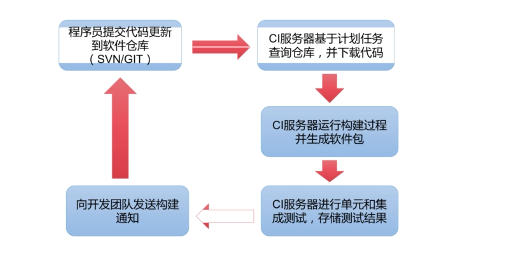
Jenkins概述
- Jenkins是由java编写的一款开发软件
- 作为一款非常流行的CI（持续集成）工具，用于构建和测试各种项目
- Jenkins的主要功能是监视重复工作的执行，例如软件工程的构建或在cron下设置的jobs
Jenkins特点
- 简单、可扩展、用户界面友好
- 支持各种SCM（软件配置管理）工具，如SVN、CIT、CVS等
- 能够构建各种风格的项目
- 可以选择安装多种插件
- 跨平台，几乎可以支持所有平台
安装Jenkins
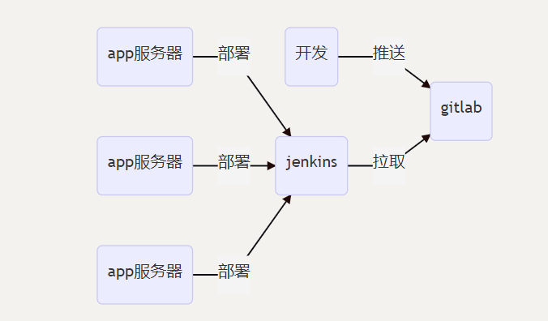
1 | [root@node2 ~]$ sudo wget -O /etc/yum.repos.d/jenkins.repo https://pkg.jenkins.io/redhat-stable/jenkins.repo |
或（建议）
1 | [root@node2 ~]$ yum install fontconfig java-1.8.0-openjdk -y |
初始化Jenkins
- Jenkins默认运行在8080端口
- 浏览器访问
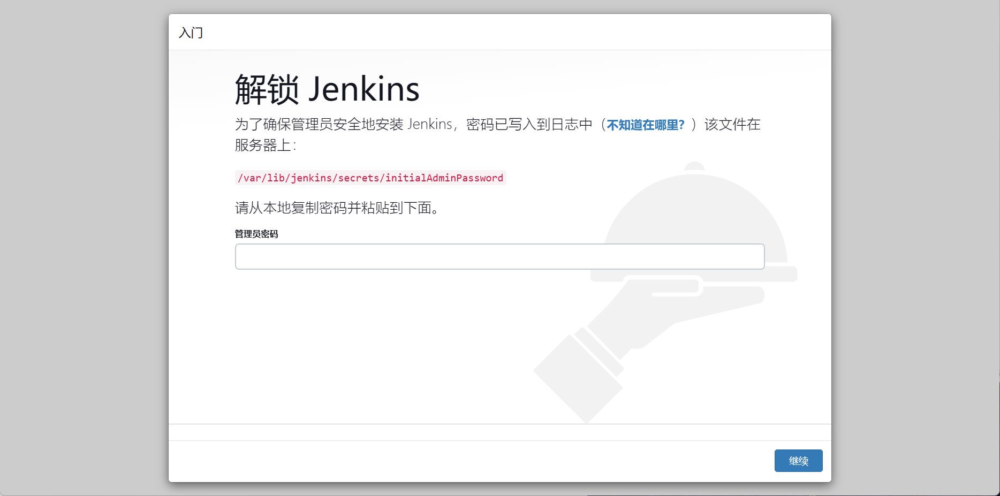
1 | [root@node2 ~]$ cat /var/lib/jenkins/secrets/initialAdminPassword |
- 如若网络较慢，先不安装插件
- 选择插件安装–无–安装
- 使用admin账户继续
- 可把密码修改为一个简单的，例000000
配置安装插件源
- 默认的官方站点安装缓慢，修改配置进行加速
1 | [root@node2 ~]$ sed -i 's/https:\/\/updates.jenkins.io\/download/https:\/\/mirrors.tuna.tsinghua.edu.cn\/jenkins/g' /var/lib/jenkins/updates/default.json |
安装插件
Git Parameter # git参数
Localiztion Chinese(Simplified) # 中文
Dingtalk # 钉钉机器人
在钉钉群里新建一个机器人
- 在jenkins中添加机器人
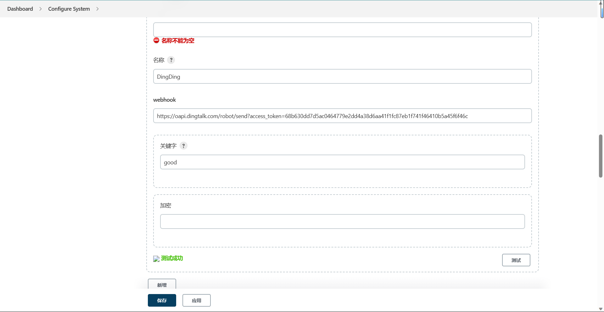
- 测试成功后报存
准备Git仓库
本地仓库
初始化mysite项目
- 创建名为mysite的项目
- 在mysite中创建index.html文件
- 将工作区文件确认至版本仓库
1 | [root@node2 ~]$ git init mysite |
tag标签
- 如果达到一个重要的阶段，并希望永远记住那个特别的提交快照，可以使用git tag给它打上标签
- 将初始化完毕的mysite项目打上标签1.0
1 | [root@node2 mysite]$ git tag 1.0 |
升级mysite
- 在mysite中进行内容修改
- 将工作区文件确认至版本仓库
- 将当前提交增加一个tag2.0
1 | [root@node2 mysite]$ vim index.html |
远程仓库
创建项目
- 创建名为mysite的仓库
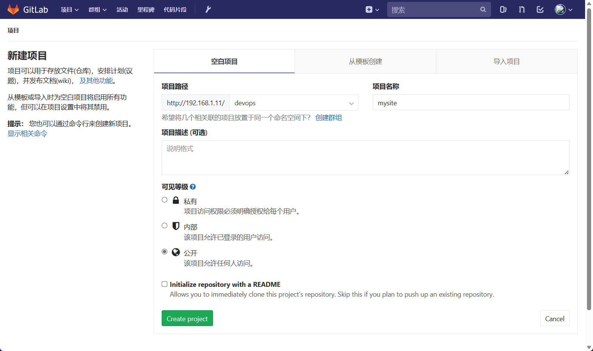
创建用户
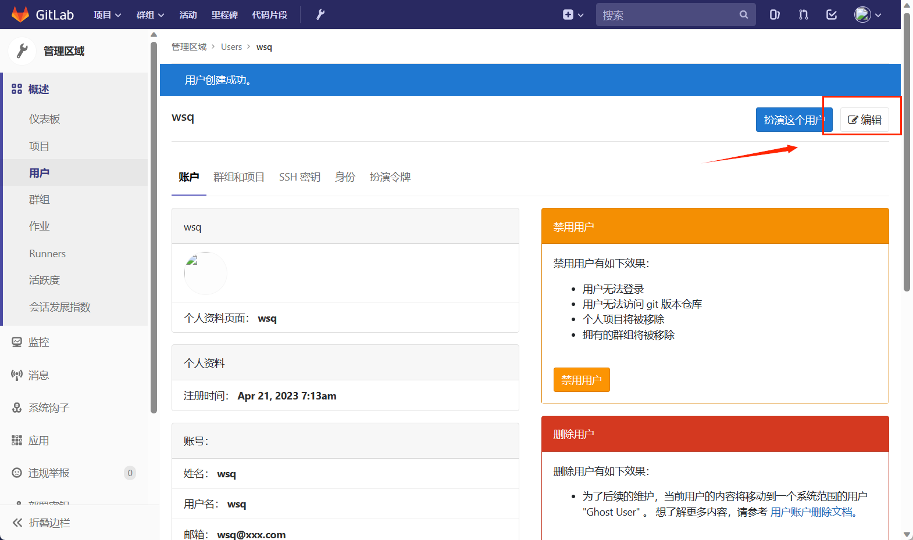
授权
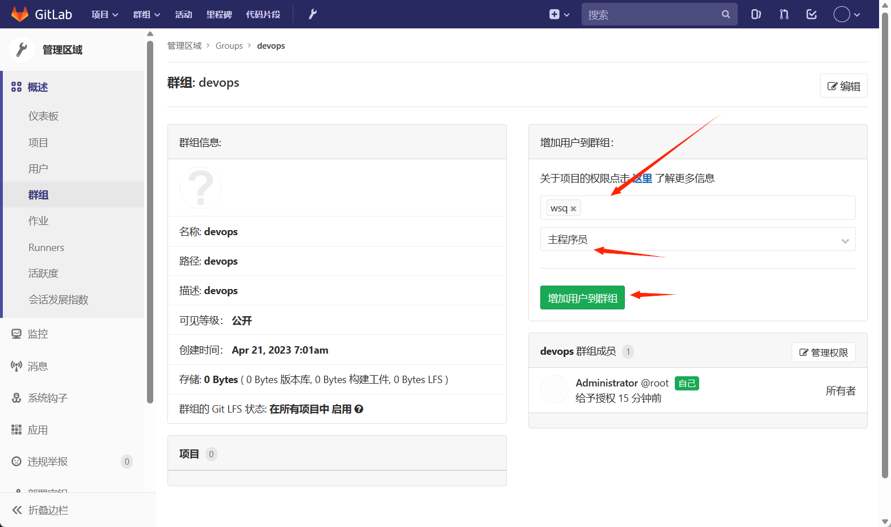
设置免密登录
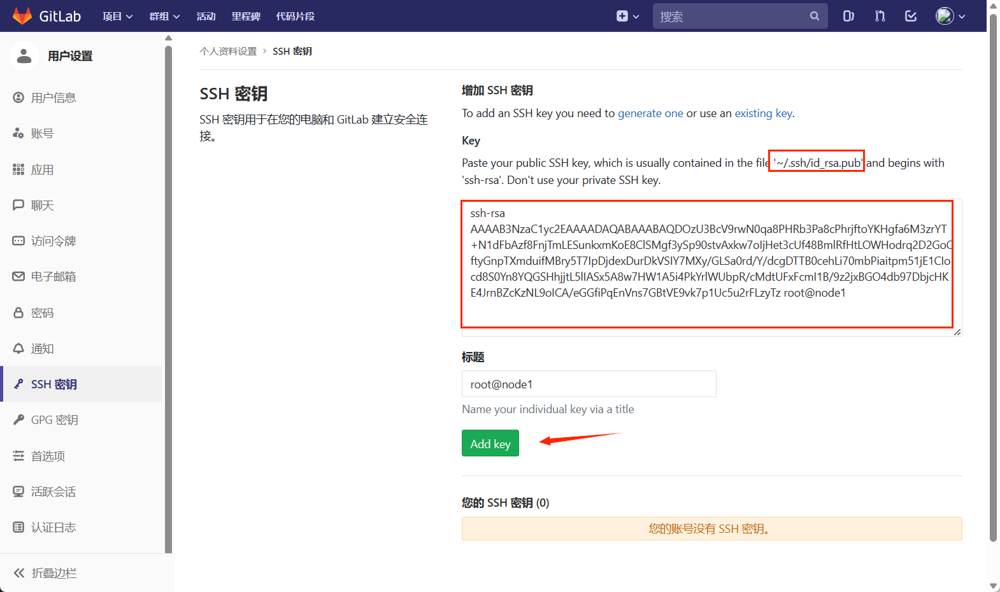
1 | [root@node2 mysite]$ git remote -v |
管理jenkins项目
构建项目
下载git插件
- 为了使得Jenkins可以使用git的tag，需要下载
git parameter插件 - 也要按照git命令
- 点击“系统管理” - > “管理插件”
创建自由风格项目
- 新建任务
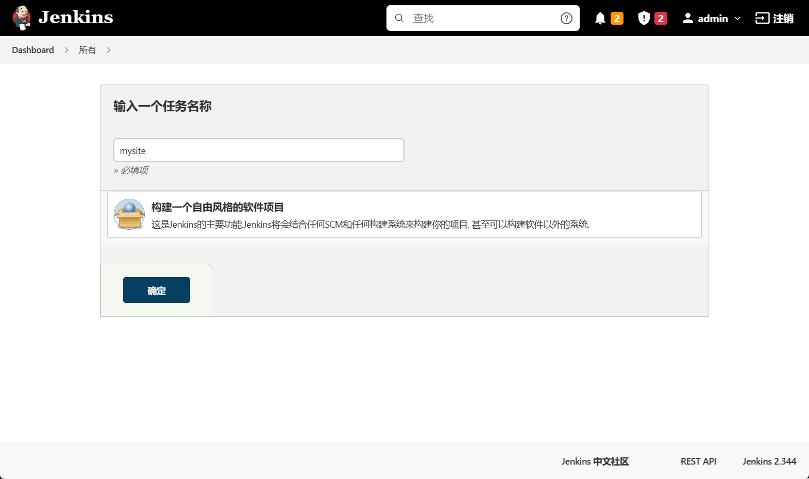
- 开启钉钉机器人
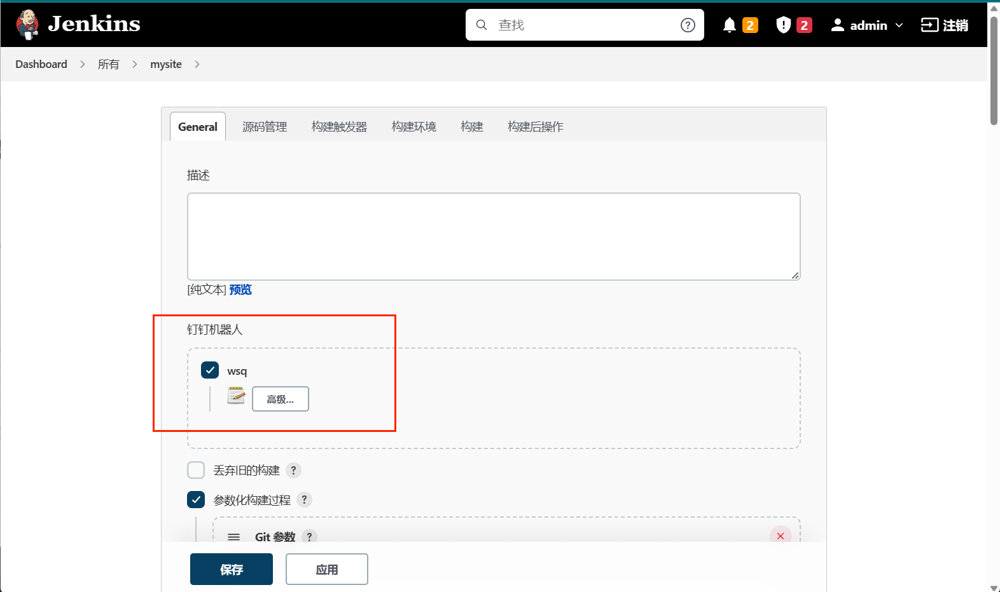
- 添加Git Parameter参数
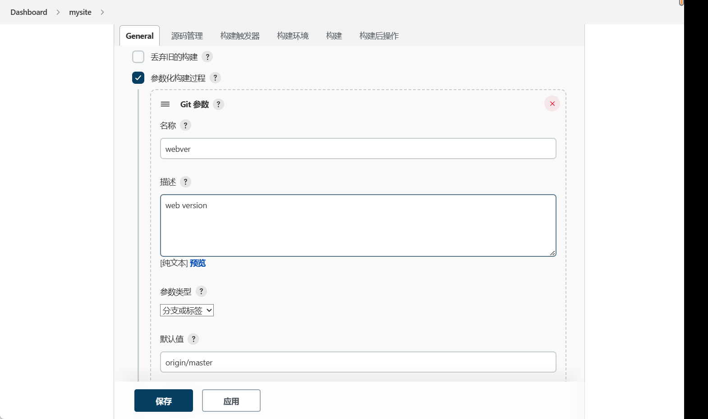
源码管理
- 源码采用git
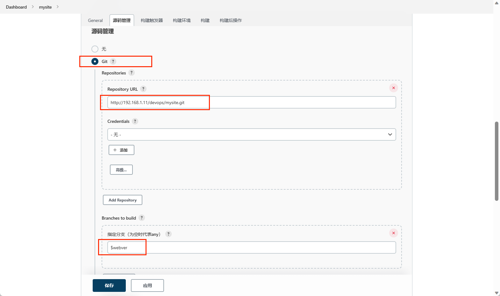
- 将源码checkout到子目录
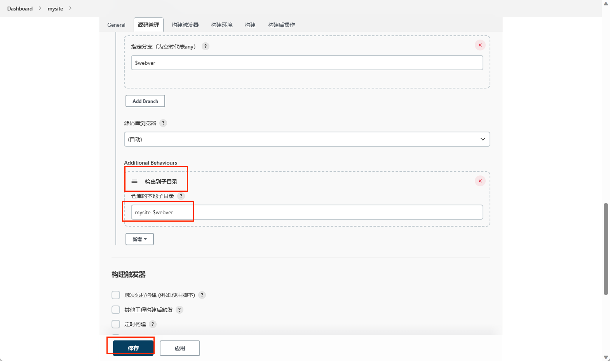
构建工程
- 构建工程
- 选择指定的标签
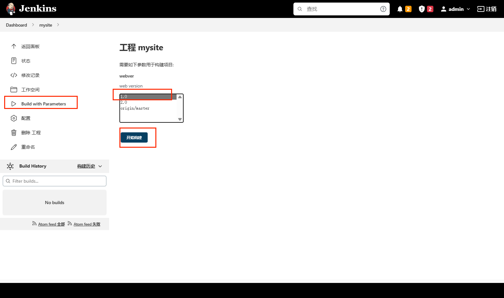
检验结构
- 选择指定的标签
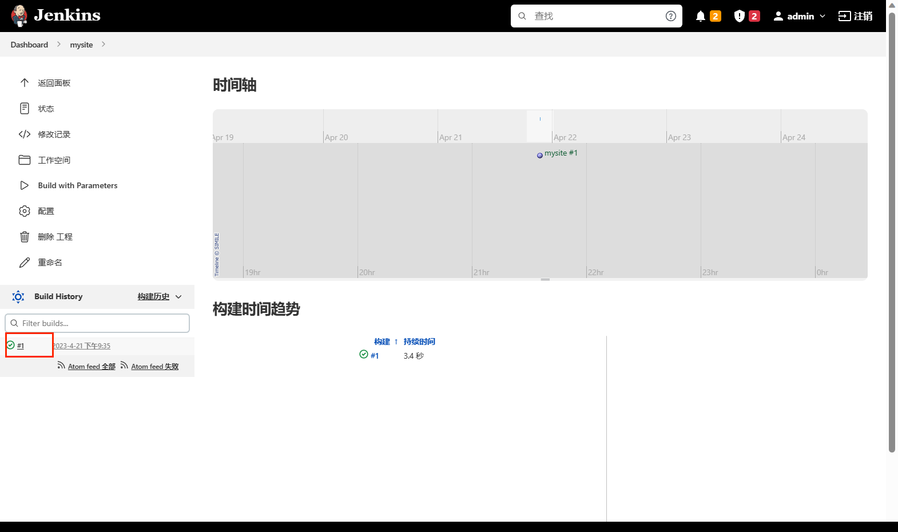
- 查看日志输出
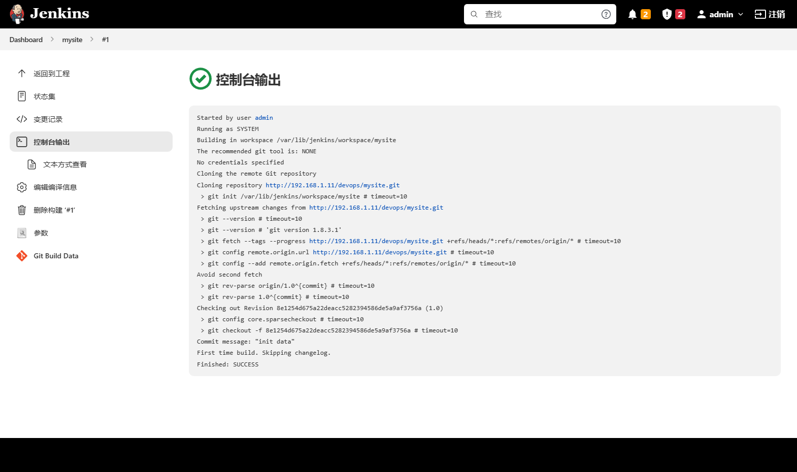
查看本地结果
- 构建好的项目出现在
/var/lib/jenkins/workspace/
1 | [root@node2 ~]$ cd /var/lib/jenkins/workspace/ |
- 再次构建2.0版本任务
- 再次查看
1 | [root@node2 workspace]$ ls mysite/ |
分发服务器管理
优化构建工程
- 在Jenkins服务器安装apache，用于分发 应用程序
- 为了方便应用服务器下载，Jenkins构建的工程应该打包成为一个文件
- 为了应用服务器可以获知下载的程序文件是没有损坏的，应该为其生成
md5值
配置分发服务器
- 通过web服务为应用服务器提供应用程序
- 下载目录为
/var/www/tml/deploy/packages
1 | [root@node2 mysite]$ yum install -y httpd |
修改工程构建工程
- 为下载的应用打包，以及生成md5可以能在工作过程中增加构建步骤完成
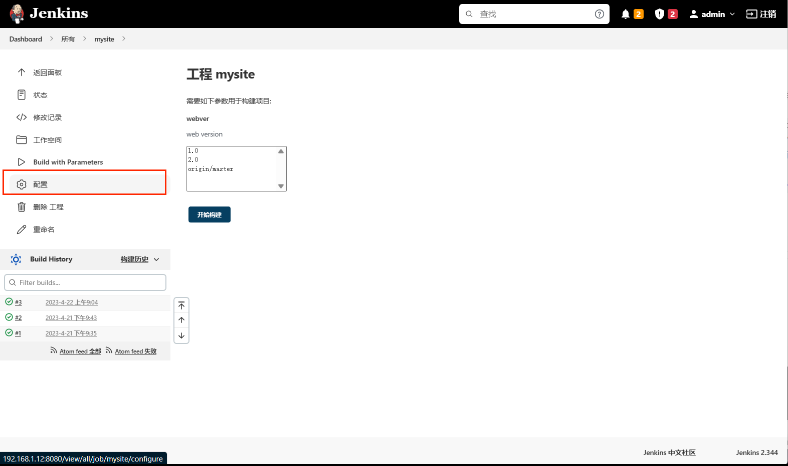
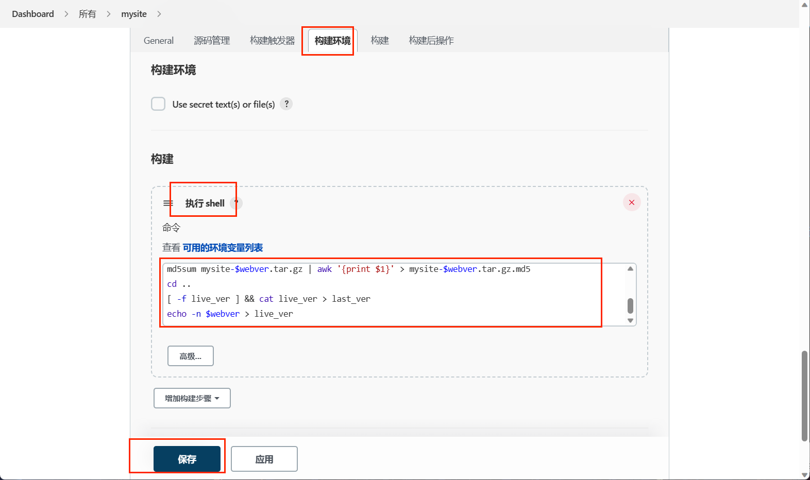
- 添加的命令
1 | pkg_dir=/var/www/html/deploy/packages |
- 再次构建任务
- 浏览器访问
http://192.168.1.12/deploy/ - 也可在本地查看
1 | [root@node2 deploy]$ ls |
自动化部署框架
自动化部署
服务器规划
为了方便版本切换，可以规划如下目录
/var/www/download用于存储下载的目录
/var/www/deploy用于存储解压的应用
创建/var/www/html/current软链接，指向需要部署的应用版本
1 | [root@node2 ~]# cd /var/www/ |
下载应用
编写下载应用的功能代码
通过位置参数指定要下载的版本
位置参数是
live下载当前版本位置参数是
last下载前一个版本如果已经下载，则不需要重复下载
校验文件
编写校验文件代码
计算指定文件的md5值
将md5值与发布服务器提供的md5进行比较，以确认下载的文件无误
发布应用
编写应用发布
根据指定的版本，创建
/var/www/html/current链接，指向到不同的发布版本
自动化部署实现
完成自动化部署功能
- 完成下载检查是否有新版本功能
- 完成文件校验功能
- 完成部署功能
- 测试结果
清空jenkins服务器
1 | [root@node2 ~]# cd /var/www/html/ |
编写python脚本
- 也可以另起一台虚拟机
- 编写名为
deploy_web的python文件
1 | import wget |
- Jenkins构建项目后，执行python脚本
- 浏览器查看python虚拟机ip（192.168.1.10/current）验证
本博客所有文章除特别声明外，均采用 CC BY-NC-SA 4.0 许可协议。转载请注明来自 CLOUD！